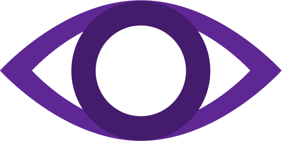
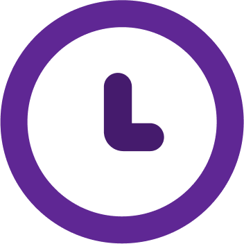
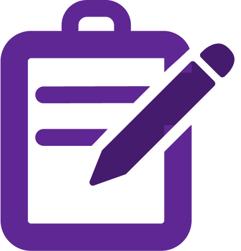

Tempo não volta,
produção também não.
Alocação automática de tarefas, painéis inteligentes
e foco no bem-estar da equipe. Tudo em um só
sistema.
Com o objetivo de tornar o gerenciamento de tarefas mais prático, produtivo e com o foco no
bem-estar dos operadores.
Melhor Funcionamento
Problemas que Resolvemos no Chão de Fábrica
Falta de Transparência
Dificuldade em identificar
responsáveis, momentos e impactos
das atividades ao longo do processo.

Falta de Transparência
Ausência de funcionários em seus
postos de trabalho, comprometendo
a produtividade.
Falta de Transparência
Supervisores gastam tempo valioso
elaborando e ajustando listas diárias
de tarefas de forma manual.
Benefícios que oferecemos
 Visão clara da produção em tempo real
Com a distribuição inteligente de tarefas, evitamos tempo perdido e
garantimos o uso eficiente de cada turno. Isso significa menos retrabalho,
menos interrupções e maior fluidez nos processos. Além disso, os gestores
conseguem enxergar rapidamente gargalos e agir antes que impactem os
resultados, mantendo a produção no ritmo certo.
Redução de retrabalho e atrasos
Gere relatórios dinâmicos e filtráveis por setor e colaborador,
comparando o planejado com o que realmente aconteceu. Assim, a
informação chega pronta para a decisão. O Kronos transforma dados
em insights claros, permitindo ajustes rápidos e gestão mais
estratégica.
Equipes menos sobrecarregadas
Nossa plataforma garante que cada colaborador tenha tarefas claras e
pausas estratégicas, promovendo bem-estar e aumentando o
engajamento. O resultado são equipes mais leves, produtivas e focadas,
além -de um ambiente de trabalho mais equilibrado e saudável, onde
cada pessoa sente que seu esforço faz diferença.
Relatórios automatizados
Com a distribuição inteligente de tarefas, evitamos tempo perdido e
garantimos o uso eficiente de cada turno. Isso significa menos falhas,
menos atrasos e entregas consistentes no prazo. A produção flui melhor,
reduz custos, mantém a satisfação dos clientes e dá mais previsibilidade
para o negócio crescer com segurança.
Resultados que sua indústria vai alcançar
+30%
Engajamento e
produtividade.
+35%
Mais eficiência
no uso do tempo.
+25%
Melhor qualidade
nas entregas.
-40%
Em atrasos nas
tarefas.
"Esses são apenas alguns dos ganhos que sua indústria pode alcançar com o Kronos."